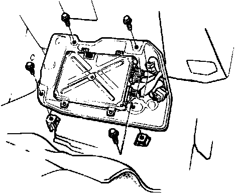

Engine Control Module: Service and Repair
ECU Removal Fig. 2:

1. Disconnect negative battery cable.
2. Remove right door sill moulding and the small cover on the right kick panel.
3. Lift carpet in front passenger footwell.
4. Remove cover screws.
5. Remove ECU mounting screws.
6. Remove ECU from vehicle.
7. Reverse procedure to install. Insure all connections to ECU are tight and secure.